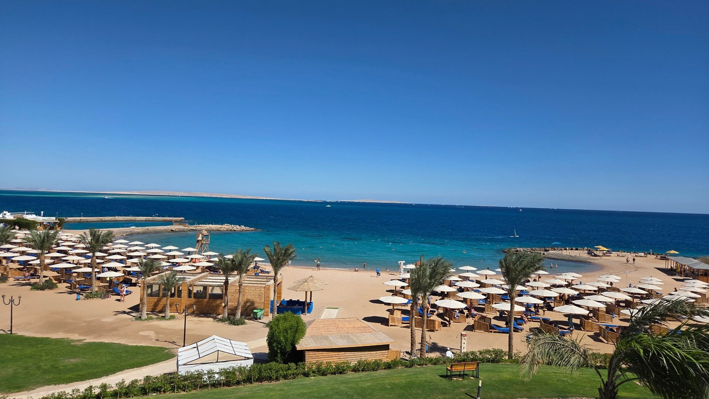
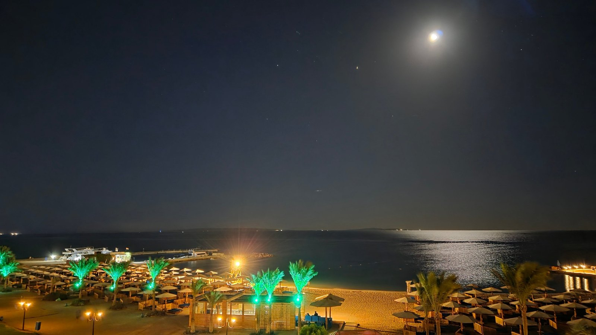

Moje hotely Accor
Mercure Hurghada dvakrát: co dal Accor Gold v roce 2024 a v roce 2026
V Mercure Hurghada jsem byl dvakrát — poprvé v březnu 2024, podruhé v říjnu 2026 o podzimních prázdninách. Obě cesty jsem si rezervoval sám a obě na čtyři noci. Díky tomu můžu porovnat nejen to, co dal Accor Gold status, ale i to, co se v hotelu za dva a půl roku změnilo.
Co udělat, abyste upgrade dostali
Tohle je jediná věc z celého článku, kterou si odneste, i kdybyste zbytek přeskočili: napište do hotelu e-mail předem.
V roce 2026 jsem pár dní před příjezdem poslal na hotel zprávu, ve které jsem připomněl, že už jsem tam jednou byl, uvedl svůj Gold status a poprosil o pokoj s výhledem na moře. Dostali jsme pokoje v nejvyšším třetím patře s přímým výhledem na moře a pláž — a to u obou rezervovaných pokojů.
V roce 2024 jsem objednal nejlevnější pokoj a dostal upgrade na Superior se Sea view. Zajímavost: tehdy jsem rezervoval dva pokoje na dva různé účty, jeden Gold a druhý Silver, a upgrade přišel na oba.

Nefunguje to vždycky a nefunguje to všude — mám i hotel, kde jsem e-mail poslal a nedostal nic. Ale ptát se až na recepci při příjezdu je prakticky jistá cesta k tomu, že nedostanete nic.
Co status přinesl v roce 2026
- Upgrade obou pokojů do třetího patra s výhledem na moře.
- Welcome drink — poukaz jsme dostali automaticky při přihlášení, nemuseli jsme si o něj říkat.
- Dárek na pokoji — talířek s egyptskými sladkostmi a tři jablka.
- Brzký příjezd. Dorazili jsme ve 13:00, hned jsme dostali náramky a mohli jít na oběd. Pokoj byl připravený hned po něm.
- Pozdní odjezd do 17:00. Letěli jsme ve 23:00 a na letiště odjížděli v 19:30, takže se to hodilo.
- Poukaz do italské à la carte restaurace — ten jsem si musel vyžádat. Běžně ho dávají až při pobytech na sedm a více nocí. Na výběr byla čtyři pevná menu: kuře, ryba, pizza a svíčkový steak.
V roce 2024 to vypadalo podobně, jen s jedním rozdílem: poukazy do à la carte jsme dostali automaticky, a to rovnou do dvou restaurací — italské a orientální. Italská nebyla nic extra, orientální byla lepší. K tomu talíř s ovocem a jedna snídaně servírovaná v restauraci, i když nabídka byla víceméně stejná jako v hlavním sále.
Co se za dva a půl roku změnilo
| březen 2024 | říjen 2026 | |
|---|---|---|
| Pivo na plážovém baru | nenalévali, muselo se 50 metrů k jinému | nalévají od 11:00 |
| Poukaz do à la carte | dostali jsme ho sami od sebe | musel jsem si říct |
| Taxi z letiště přes Booking | 130 Kč | 200–250 Kč pro čtyři osoby |
| Doprava do města | Careem, 3 dolary | Uber, od zhruba 50 Kč |
Víno zůstalo stejně — podává se jen k obědu a k večeři, ne průběžně. Kvalita průměrná až lehce podprůměrná. Pivo je dnes čepované celý den a míchané drinky dělají z místního alkoholu; gin s tonikem je docela dobrý.
Hotel, pláž a jídlo
Je to starší hotel a je to na něm vidět. Postupně prochází rekonstrukcí a podle nápisů se má v budoucnu změnit na značku Mövenpick, což nejspíš zvedne i cenu.
Pláž je soukromá a byla pro mě hlavní důvod se vrátit: je u ní malý korál s rybkami, není tam viditelný odliv a kousek od břehu je dost vody na plavání. Vedle stojí Rixos, ale ten je cenově úplně jinde.

Jídlo není kulinářský zážitek, ale je chutné. Vždycky je na výběr ryba a mají výbornou rýži.
Co nevyšlo: při příjezdu v roce 2026 chyběly na pokoji ručníky a musel jsem je urgovat třikrát, než je večer donesli.
Na co se připravit: v minibaru je pouze balená voda, dvakrát půl litru denně, bez dalšího doplňování. Po hotelu jsou ale volně dostupné automaty na nealko včetně sody a barely s pitnou vodou, takže o žízeň nejde.
Kolik to stálo
Ceny jsou z října 2026 a jeli jsme ve čtyřech, tedy dva pokoje.
| Položka | Částka |
|---|---|
| Hotel, 4 noci all inclusive, 2 pokoje | 33 000 Kč |
| Letenky Katowice – Hurghada, 4 osoby | 18 000 Kč |
| Parkování v Katowicích, 100 zlotých | cca 550 Kč |
| Taxi z letiště a zpět | cca 500 Kč |
| Dohromady za čtyři osoby | cca 52 000 Kč |
To je zhruba 13 000 Kč na osobu za čtyři noci v all inclusive.
Pro srovnání v roce 2024: tehdy stál jeden pokoj na čtyři noci v all inclusive 320 dolarů a letenka Wizz Airem z Vídně 2 200 Kč. Let se tehdy čtyřikrát posouval.
Vyplatí se to proti cestovce?
Tohle je otázka, kterou dostávám nejčastěji, tak jsem si ji ověřil konkrétně.
Na zajezdy.cz jsem si 1. listopadu 2026 našel ten samý hotel: termín 5. až 9. prosince 2026, tedy také pět dní a čtyři noci, all inclusive, přímý let z Prahy. Cena 16 670 Kč na osobu, 33 340 Kč za dva lidi. Pokoj dvoulůžkový Standard s výhledem do zahrady.
Pro čtyři osoby by to dělalo 66 680 Kč proti mým zhruba 52 000 Kč. Rozdíl je asi 14 600 Kč.
Dvě věci k tomu musím říct na rovinu:
V ceně zájezdu je transfer z letiště a já si taxi platil zvlášť — v mé kalkulaci je započítané. Naopak v ní nemám benzín do Katowic a zpět, takže reálný rozdíl bude o něco menší.
A hlavně: srovnávám svůj pobyt o podzimních prázdninách s nabídkou na začátek prosince, protože na můj termín už se cena dohledat nedá. Jak moc na termínu záleží, ukazuje tatáž cestovka u téhož hotelu v únoru, kdy jsou jarní prázdniny: 23 173 Kč na osobu. Ve svém termínu bych u cestovky zaplatil spíš víc než těch 16 670 — rozdíl v můj prospěch je proto nejspíš větší, ne menší.
Kromě peněz jsem navíc dostal pokoj s výhledem na moře místo standardu s výhledem do zahrady, odjezd z pokoje až v pět odpoledne a večeři v à la carte restauraci.
Co bych udělal jinak
- Napsal bych na hotel e-mail dřív. Poslal jsem ho pár dní předem a vyšlo to, ale čím dřív, tím líp — hotel má v tu chvíli ještě volné pokoje, ze kterých může vybírat.
- Hned při příjezdu bych se zeptal na poukaz do à la carte. V roce 2024 ho dávali sami, v roce 2026 jsem si o něj musel říct. Kdybych nevěděl, že existuje, nedostal bych ho.
- Ručníky bych řešil hned na recepci, ne telefonem z pokoje. Třikrát urgovat je dvakrát moc.